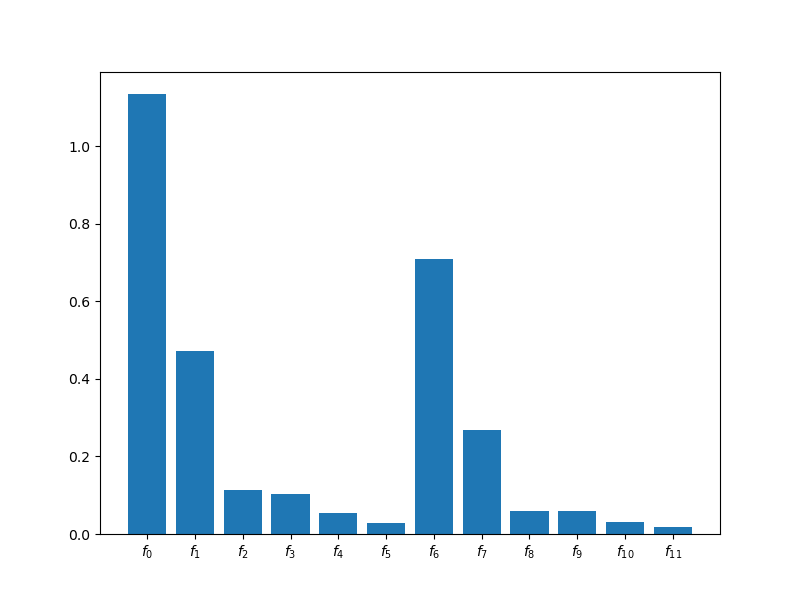
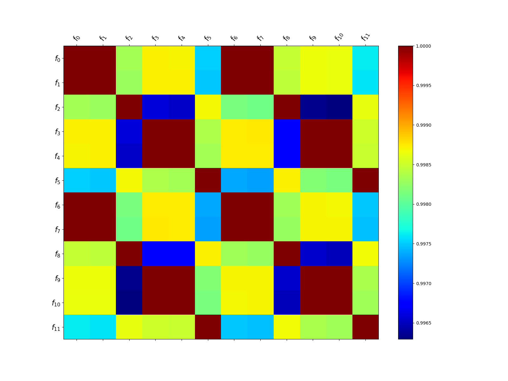

Note
Go to the end to download the full example code
Model Ensemble Selection
For many applications a large number of model fidelities are available. However, it may not be beneficial to use all the lower-fidelity models because if a lower-fidelity model is poorly correlated with the other models it can increase the covariance of the ACV estimator. In some extreme cases, the covariance can be worse than the variance of a single fidelity MC estimator that solely uses the high-fidelity data. Consequently, in practice it is important to choose the subset of models that produces the smallest estimator covariance.
The following tutorial shows how to choose the best subset of models.
import numpy as np
import matplotlib.pyplot as plt
from pyapprox import multifidelity
from pyapprox.benchmarks import setup_benchmark
from pyapprox.interface.wrappers import WorkTrackingModel, TimerModel
from pyapprox.util.visualization import mathrm_label
np.random.seed(1)
Configure the benchmark
Lets configure the benchmark.
time_scenario = {
"final_time": 1.0,
"butcher_tableau": "im_crank2",
"deltat": 0.1, # default will be overwritten
"init_sol_fun": None,
"sink": None
}
nlevels = 2
config_values = [
[11, 21, 31],
[11, 31],
[0.125, 0.0625]]
benchmark = setup_benchmark(
"multi_index_advection_diffusion",
kle_nvars=3, kle_length_scale=0.5,
time_scenario=time_scenario, config_values=config_values)
# Add wraper to compute the time each model takes to run
funs = [WorkTrackingModel(
TimerModel(fun), base_model=fun) for fun in benchmark.funs]
Run the pilot study
The following code runs a pilot study to compute the necessary pilot quantities needed to predict the variance of any estimator of the mean of the model
npilot_samples = 20
pilot_samples = benchmark.variable.rvs(npilot_samples)
pilot_values_per_model = [fun(pilot_samples) for fun in funs]
nmodels = len(benchmark.funs)
stat = multifidelity.multioutput_stats["mean"](1)
stat.set_pilot_quantities(
*stat.compute_pilot_quantities(pilot_values_per_model))
# Extract median run times of each model
model_ids = np.asarray([np.arange(nmodels)])
model_costs = [fun.cost_function()[0] for fun in funs]
ax = plt.subplots(1, 1, figsize=(8, 6))[1]
multifidelity.plot_model_costs(model_costs, ax=ax)
ax = plt.subplots(1, 1, figsize=(16, 12))[1]
_ = multifidelity.plot_correlation_matrix(
multifidelity.get_correlation_from_covariance(stat._cov.numpy()), ax=ax,
format_string=None)
- 
- 
Find the best subset of of low-fidelity models
The following code finds the subset of models that minimizes the variance of a single estimator by iterating over all possible subsets of models and computing the optimal sample allocation and assocated estimator variance. Here we restrict our attention to model subsets that contain at most 4 models.
# Some MFMC estimators will fail because the models
# do not satisfy its hierarchical condition so set
# allow_failures=True
best_est = multifidelity.get_estimator(
"mfmc", stat, model_costs, allow_failures=True,
max_nmodels=5, save_candidate_estimators=True)
target_cost = 1e2
best_est.allocate_samples(target_cost)
print("Predicted variance",
best_est._covariance_from_npartition_samples(
best_est._rounded_npartition_samples))
Predicted variance tensor([[1.6107e-06]])
Plot the variance reduction relative to single-fidelity MC of the best estimator for increasing total number of allowed low fidelity models.
# Sort candidate estimators into lists with the same numbers of models
from collections import defaultdict
est_dict = defaultdict(list)
for result in best_est._candidate_estimators:
if result[0] is None:
# skip failures
continue
est_dict[result[0]._nmodels].append(result)
nmodels_list = np.sort(list(est_dict.keys())).astype(int)
best_est_indices = [
np.argmin([result[0]._optimized_criteria for result in est_dict[nmodels]])
for nmodels in nmodels_list]
best_ests = [est_dict[nmodels_list[ii]][best_est_indices[ii]][0]
for ii in range(len(nmodels_list))]
est_labels = ["{0}".format(est_dict[nmodels_list[ii]][best_est_indices[ii]][1])
for ii in range(len(nmodels_list))]
ax = plt.subplots(1, 1, figsize=(8, 6))[1]
_ = multifidelity.plot_estimator_variance_reductions(
best_ests, est_labels, ax)
ax.set_xlabel(mathrm_label("Low fidelity models"))
plt.show()
Find the best estimator
We can also find the best estimator from a list of estimator types while still determining the best model subset. This code chooses the best estimator from two possible parameterized ACV estimator classes. Specifically it chooses from all possible generalized recursive difference (GRD) estimators and genearlized multifidelity estimators that use at most 3 models and have a maximum tree depth of 3.
best_est = multifidelity.get_estimator(
["grd", "gmf"], stat, model_costs, allow_failures=True,
max_nmodels=3, tree_depth=3,
save_candidate_estimators=True)
target_cost = 1e2
best_est.allocate_samples(target_cost)
print("Predicted variance",
best_est._covariance_from_npartition_samples(
best_est._rounded_npartition_samples))
# Sort candidate estimators into lists with the same estimator type
from collections import defaultdict
est_dict = defaultdict(list)
for result in best_est._candidate_estimators:
if result[0] is None:
# skip failures
continue
est_dict[result[0].__class__.__name__].append(result)
est_name_list = list(est_dict.keys())
est_name_list.sort()
best_est_indices = [
np.argmin([result[0]._optimized_criteria for result in est_dict[name]])
for name in est_name_list]
best_ests = [est_dict[est_name_list[ii]][best_est_indices[ii]][0]
for ii in range(len(est_name_list))]
est_labels = [
"{0}({1}, {2})".format(
est_name_list[ii],
est_dict[est_name_list[ii]][best_est_indices[ii]][1],
est_dict[est_name_list[ii]][best_est_indices[ii]][0]._recursion_index)
for ii in range(len(est_name_list))]
ax = plt.subplots(1, 1, figsize=(8, 6))[1]
_ = multifidelity.plot_estimator_variance_reductions(
best_ests, est_labels, ax)
ax.set_xlabel(mathrm_label("Estimator types"))
plt.show()
Predicted variance tensor([[1.6021e-06]])
Total running time of the script: ( 1 minutes 24.152 seconds)